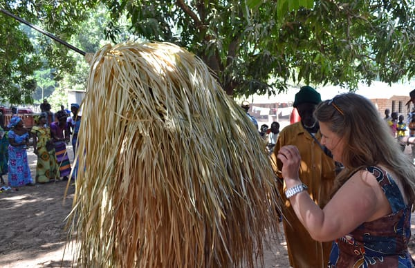
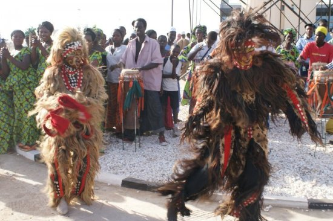

Tot i ser un dels països més petits d’Àfrica, Gàmbia destaca per la seva riquesa cultural en música i dansa. Diverses ètnies com les mandinga, wòlof i fula aporten ritmes i moviments únics, mentre l’escena urbana fusiona afrobeat, dancehall i hip-hop amb arrels tradicionals.
Danses principals
Kumpo
El Kumpo és una figura mítica dels Jola, que apareix coberta amb fulles de palma seques i porta un bastó amb una bandera al cap. Ballant amb girs constants i música de tambors i cants corals, aquesta dansa ritual s’executa en cerimònies d’iniciació, casaments i festivals culturals per reforçar la unitat comunitària.

Figura del Kumpo
Simba
El Simba (o Zimba) és una dansa wòlof que imita el lleó, simbolitzant força i valentia. Els ballarins porten vestits de pells, petxines i, a vegades, màscares fetes de pèl de vaca. Amb moviments ràpids i ferotges, interactuen amb el públic durant festivals, casaments i cerimònies d’iniciació, recordant la importància espiritual i cultural del lleó.

Ballarins de Simba
Passos
A Gàmbia no s’han identificat passos de ball específics amb nom propi, ja que les danses tradicionals es conciben com a expressions col·lectives i rituals. Les tradicions es transmeten per via oral, i els moviments no es codifiquen en passos independents.
Impacte cultural
Les danses de Gàmbia, com el Kumpo i el Simba, són elements centrals de cerimònies rituals i festes comunitàries. A més d’unir la gent, reforcen la identitat ètnica i espiritual. Tot i la modernització, aquestes tradicions continuen vives en festivals locals i contribueixen a la diversitat cultural d’Àfrica Occidental.